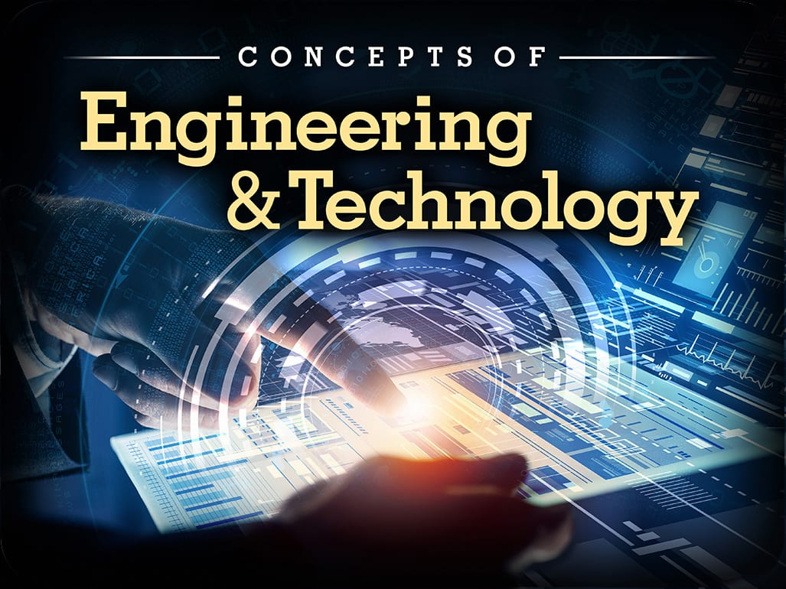

Engineering is the application of science and math to solve problems. Engineers figure out how things work and find practical uses for scientific discoveries. Scientists and inventors often get the credit for innovations that advance the human condition, but it is engineers who are instrumental in making those innovations available to the world.
The history of engineering is part and parcel of the history of human civilization. The Pyramids of Giza, Stonehenge, the Parthenon and the Eiffel Tower stand today as monuments to our heritage of engineering. Today's engineers not only build huge structures, such as the International Space Station, but they are also building maps to the human genome and better, smallercomputer chips.
What does an engineer do?
Engineers design, evaluate, develop, test, modify, install, inspect and maintain a wide variety of products and systems. They also recommend and specify materials and processes, supervise manufacturing and construction, conduct failure analysis, provide consulting services and teach engineering courses in colleges and universities.